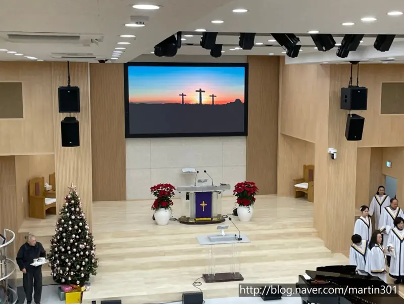

Blog · 경기도 포천시
포천에서 행사를 준비하는 담당자를 위한 글입니다. 남양주 별내 사무실에서 포천시청까지 차로 약 30분 · 35.8km(막히지 않을 때 기준).

포천에서 한 일과 이동 시간은 포천 음향 · 설치 안내에 있습니다.
날짜와 장소, 대략의 규모만 알려 주세요. 현장에 맞는 구성을 함께 찾아 드립니다. (월~토 09:00~18:00)